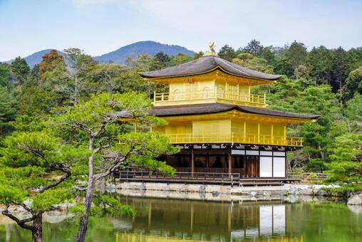

2026年6月2日
京都を代表する観光名所のひとつ、 金閣寺。 正式名称は鹿苑寺（ろくおんじ）ですが、 その美しい金色の舎利殿から 「金閣寺」の名前で広く知られています。

金閣寺とは？
室町幕府三代将軍・足利義満によって 建立された寺院です。 世界遺産にも登録されており、 京都を訪れたら一度は見ておきたい名所です。
鏡湖池に映る金閣寺は、
まるで一枚の絵画のような美しさです。
見どころ
・金箔で覆われた舎利殿
・鏡湖池に映る逆さ金閣
・四季折々の庭園風景
おすすめ写真スポット
池越しに見る金閣寺が定番です。 特に朝や夕方は光が柔らかく、 美しい写真を撮影できます。
おすすめの季節
春の新緑、 秋の紅葉、 冬の雪景色は特に人気があります。 雪化粧した金閣寺は 京都屈指の絶景として知られています。
周辺グルメ
金閣寺周辺には 抹茶スイーツや京だんごのお店が並びます。 観光の合間に立ち寄るのもおすすめです。
← トップページへ戻る